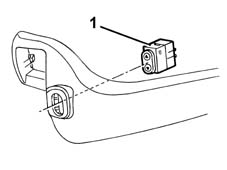

7045J10 switch unit for movement of one front seat, l/h or r/h - r+r for check
- Path
- Procedures > 70 FITTINGS > 7045 FRONT SEATS > 7045J front seat movement > 7045J10 switch unit for movement of one front seat, l/h or r/h - r+r for check
- Kind
- repair procedure (removal / refitting; the operation number is the code)
- Applies to
- all engines; all production periods
- Interactive page
- https://sloeber94.github.io/elrnDB-fMltpl/en/#/2892240
Applies to: all engines; all production periods
 Removing
Removing
 Refitting
Refitting7045A42 l/h or r/h front seat guard (one) - r+r
1. Remove the switch from the shield.

Applies to: all engines; all production periods
Refitting
RemovingCheck that the switch is working. If necessary, carry out an electrical test on the switch.
Fit the switch.
7045A42 l/h or r/h front seat guard (one) - r+r .
Check that the seat lift device works properly.